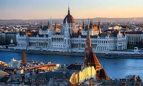
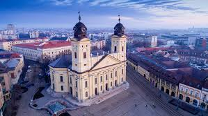
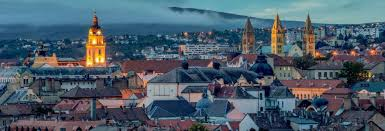
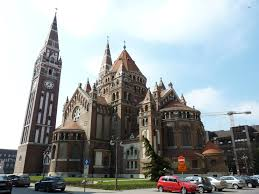

Budapest
Budapest, la capital de Hungría, es una ciudad fascinante que combina una rica historia con una vibrante vida moderna. Conocida por sus impresionantes edificios históricos, relajantes baños termales y animada vida nocturna, Budapest ofrece una amplia gama de experiencias a sus visitantes. Entre sus principales atracciones se encuentran el Castillo de Buda, el Parlamento húngaro, los Baños Széchenyi y la Avenida Andrássy. Además, los turistas pueden disfrutar de un paseo por el río Danubio, explorar sus encantadores barrios como el Barrio del Castillo y probar la deliciosa comida húngara en los numerosos restaurantes de la ciudad.
Debrecen
Debrecen es la segunda ciudad más grande de Hungría y un importante centro cultural y educativo. Conocida por su arquitectura barroca, parques tranquilos y festivales culturales, Debrecen ofrece una experiencia única a sus visitantes. Entre sus principales atracciones se encuentran la Gran Iglesia Protestante, el Parque Nagyerdő y el Museo de Déri, que alberga una colección de arte e historia local. Además, los turistas pueden explorar el centro histórico de la ciudad, disfrutar de conciertos y eventos en la Plaza Kossuth y degustar la cocina húngara en los restaurantes locales.
Pécs
Pécs es una encantadora ciudad situada en el suroeste de Hungría, conocida por su rica historia, arquitectura romana y ambiente artístico. Entre sus atracciones más destacadas se encuentran la Catedral de Pécs, el Museo de la Ciudad de Pécs y la Basílica de San Pedro y San Pablo. Además, Pécs es famosa por su vida cultural, con festivales de música, teatro y arte durante todo el año. Los visitantes también pueden explorar sus pintorescas calles adoquinadas, disfrutar de la comida húngara en los acogedores cafés y restaurantes, y visitar las bodegas locales para probar el vino húngaro.
Szeged
Szeged es una ciudad situada en el sur de Hungría, conocida por su arquitectura neoclásica, animada vida cultural y deliciosos platos tradicionales. Entre sus atracciones más destacadas se encuentran la Plaza Mayor de Szeged, la Catedral de Votiva y el Museo Ferenc Móra. Además, Szeged es famosa por su festival de teatro al aire libre, el Festival Szeged de Días de la Ciudad, que atrae a artistas y espectadores de todo el mundo. Los visitantes también pueden disfrutar de un paseo por el río Tisza, explorar el Jardín Botánico de Szeged y degustar la sopa de pescado tradicional en los restaurantes locales.